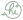
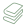

Introduktion
Om mig 
Mit navn er Kamilla Huhnke, og jeg er 24 år gammel. Jeg har i de første 15 år af mit liv boet i en lille landsby i Nordsjælland, men har efterfølgende boet lidt forskellige steder på Sjælland. Til hverdag går jeg på Københavns Erhversakademi, og derudover arbejder jeg i en bager. Når jeg ikke har hovedet begravet i GitHub, wienerbrød eller bøger, så er jeg til at finde hos min familie eller venner. De er og vil altid være min første prioritet. Uanset om man ender på en sjov udflugt på en solskinsdag, en masse timer fyldt med kreative udfoldelser eller en film på en regnvejrsdag, så vil det altid blive en god dag i deres selskab.
Multimediedesign 
I 2020 blev jeg student efter at have fuldført 3 års skolegang på Københavns VUC. Efter 2 års fuldtidsarbejde startede jeg på Københavns Erhvervsakademi i januar 2023. Dette website er derfor portfoliet for alle mine personlige opgaver på 1. semester på Multimediedesign uddannelsen. Jeg er startet på denne uddannelse, da jeg synes det komplekse ved kodning og det grafiske indenfor indhold samt animation lød super interessant. Da jeg altid har nydt mange forskellige kreative hobbyer og blot det at kreere ting generelt, så ser jeg frem til jobmulighederne efter jeg har gennemført Multimediedesign uddannelsen. Det vil selvfølgelig være et drømmescenarie at finde et job, som samtidig er ens hobby og store interesse. Jeg er ikke i tvivl om, at jeg hører til i denne branche, så jeg er sikker på, at der venter noget godt i fremtiden.